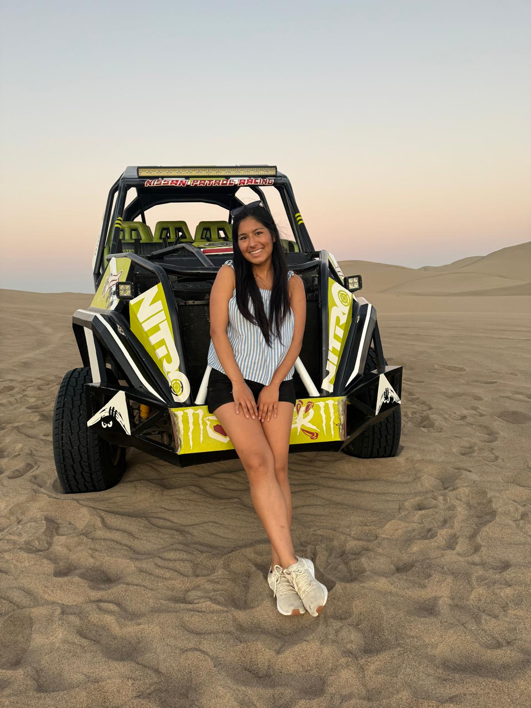
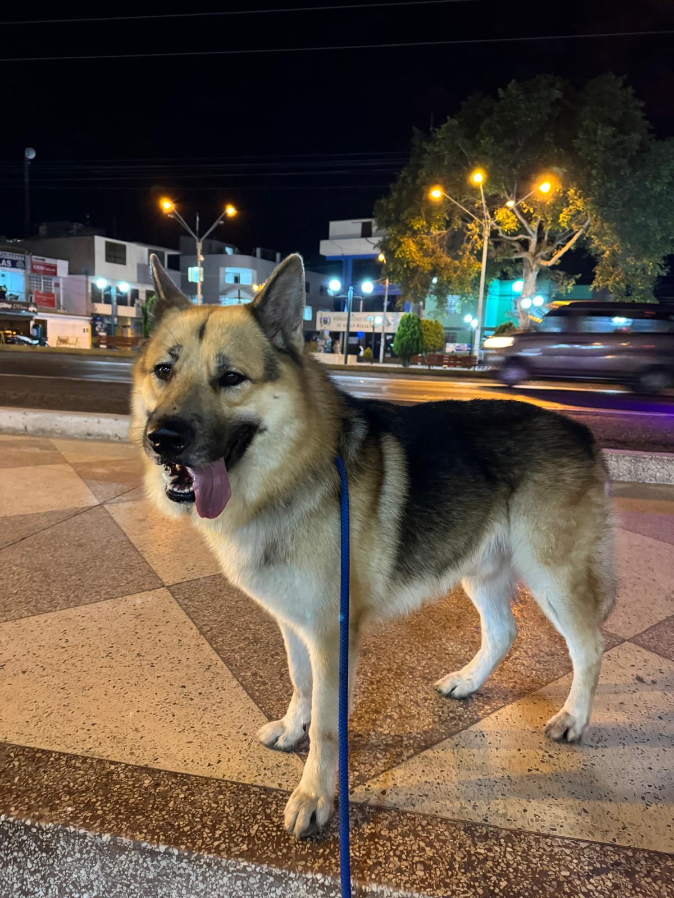
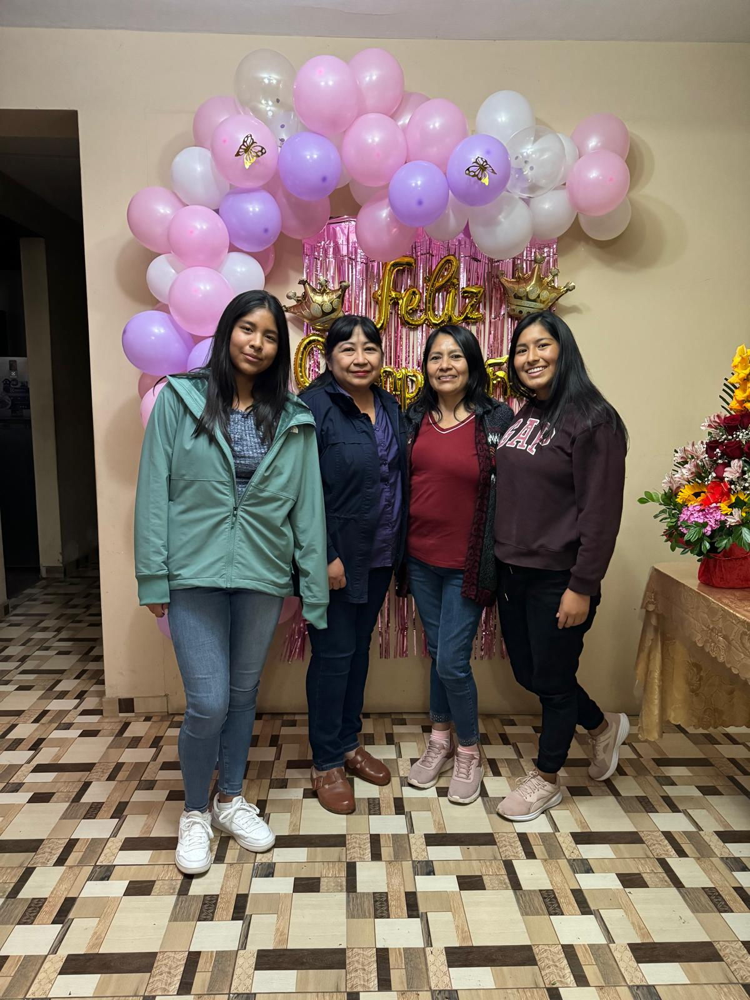

WELCOME TO MY PERSONAL WEBSITE
Click on the button below to find out more about me, my classes, and my interests!
Start scrolling!

I'm a junior at the University of North Carolina at Chapel Hill majoring in Computer Science and Communications.
I work as a Social Media Manager for CEMALB at UNC. I'm also trying to find an internship as a software engineer
for the next summer. I'm originally from Ica, Peru.
Tools and concepts for information literacy. Includes software use and maintenance, computer applications, and networked information systems. (From the UNC Catalog)
An introduction to the design, aesthetics, and analysis of various forms of digital media. Hands-on experience with different modes of creation, including graphics, web-based communication, and social media. (From the UNC Catalog)
I love college life, which includes spending time with my friends and my classes. I go to sport games, like football, basketball, and hockey. I try to have a healthy life style eating healthy and working out. Things I do for fun are ice skating, bowling, and swimming, but definitely my favorite pass time is spending time with my dog when I take him on walks.
 